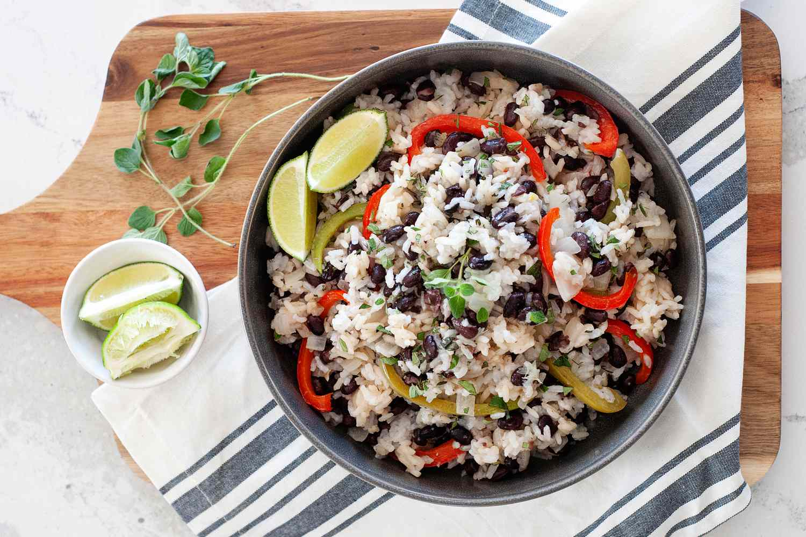

Black Bean and Rice

Black beans and rice make a great 30-minute vegetarian meal that's filling, delicious, and cheap!
Great as a side dish or in a burrito bowl, too.
Ingredients
1 teaspoon olive oil
1 onion, chopped
2 cloves garlic, minced
¾ cup uncooked white rice
1 ½ cups low sodium, low fat vegetable broth
3 ½ cups canned black beans, drained
1 teaspoon ground cumin
¼ teaspoon cayenne pepper
Steps
- Heat oil in a saucepan over medium-high heat.
- Add onion and garlic; cook and stir until onion has softened, about 4 minutes.
- Stir in rice to coat; cook and stir for 2 minutes.
- Add vegetable broth and bring to a boil.
- Cover, reduce to a simmer, and cook until liquid is absorbed, about 20 minutes.
- Stir in beans, cumin, and cayenne; cook until beans are warmed through.